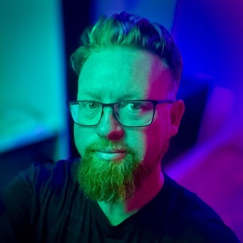

Tim Klapdor
Manager Educational Design & Learning Designer
My time on the project
I led the course development process for this project, which meant figuring out how to build something the university had never done before. I needed to work out the timelines and resource requirements – but also develop new practices and skills from scratch, then build and lead a team who could use, enhance, and innovate on them. And I had to do all this while navigating resourcing challenges with faculties and constant changes to our working environment. My job was equal parts project manager, curriculum designer, negotiator and capacity builder.
I developed the business plan's timelines and resourcing requirements to account for rolling development and delivery cycles. The multi-year scale of the project required me to build a combined development and teaching schedule that would work for an open-enrolment system with flexible study options, ensuring students could start when they wanted and progress through their degree regardless of their chosen path.
Leading the course development team was the highlight of my time on the project. My aim was to establish a team capable of handling the challenges and complexities of course design and development in higher education. To do this, I chose to move away from the 'lone wolf' approach to learning design and instead create a collaborative environment that harnessed the team's skills, knowledge, and experience.
I deliberately recruited a diverse team and structured our work around design sprints, peer reviews, critique sessions, and regular standups. This approach surfaced creative tensions and different perspectives, which the team learned to navigate and harness. The iterative rhythm meant we could test ideas, refine our tools, abandon what didn't work and continuously improve our practices and how we worked together. Change became expected and encouraged, enabling the team to experiment and push boundaries, ultimately producing work that extended well beyond the original project scope.
Key contributions:
- Established Miro as the team's core design tool, enabling distributed and real-time collaboration and visual thinking across the entire design process.
- Developed the first Visual Style Guide, creating consistency across courses, providing designers with clear direction and embedding signposts for learners.
- Created Learning Types and Patterns as a shared design language that streamlined course development, reduced decision paralysis and provided insight into the underlying pedagogy and learning experience.
- Conceptualised Smart Storyboard, a tool that integrates learning design, content development and project management in a single workflow.
- Led quality assurance for all courses, reviewing design briefs and evaluating courses against the Adelaide Online Learning Experience standards.
- Stepped in to do hands-on learning design when resourcing gaps emerged, ensuring project timelines stayed on track.
- Built working relationships with Media Production and Project Management teams, establishing clear workflows and communication protocols.
- Developed project management practices and reporting systems that kept stakeholders informed and the project transparent